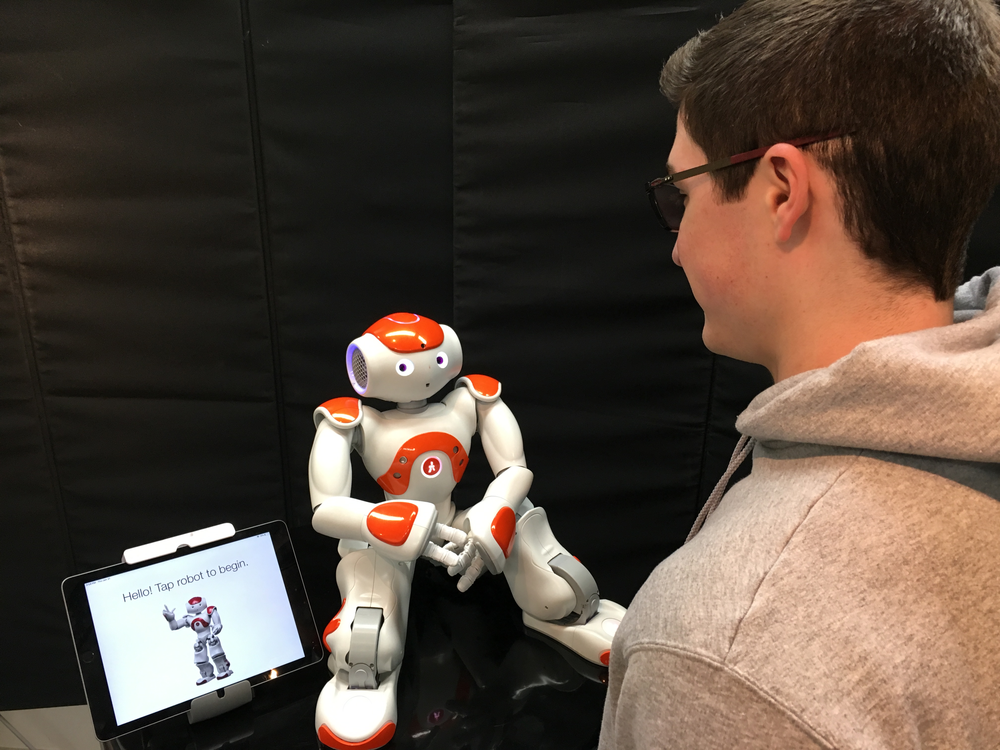

I'm a fourth-year PhD student at the University of Wisconsin–Madison, researching social robotics and formal methods, and creating tools and techniques that help people program social robots. I work with professors Bilge Mutlu, Aws Albarghouthi, and Allison Sauppé, and I am currently supported by the NSF Graduate Research Fellowship.
Prior to my graduate studies, I attended the University of Arizona for my undergraduate degree. As an undergraduate I worked with Dr. E. Fiona Bailey in the Physiology Department to record and analyze neuromuscular activity, Dr. Joanna Masel in the Ecology and Evolutionary Biology Department to assist developing computational models of evolution, and Dr. John Kececioglu in the Computer Science Department to develop a novel method for protein secondary structure prediction.

Programatic Repair of Human-Robot Interactions
We are currently investigating novel methods for automatically making modifications to a robot program after the program has been deployed on a physical robot. The goal of the modifications is to maximize user experience for a specific interaction context, while maintaining adherence to a prespecified set of baseline context-free social norms.